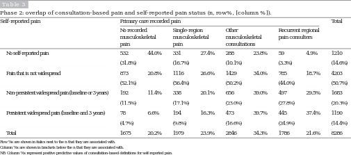

<?xml version="1.0" encoding="UTF-8"?>
<table title="table3" id="table3" class="tabcontent" xmlns="http://www.w3.org/1999/xhtml">
 <tr>
  <td>
   
   <p>corpus-oa-validation/10.1097_j.pain.0000000000000733/tables/table3/table.svg.png</p>
  </td>
  <td>
   <table class="table">
    <caption/>
    <tr>
     <th/>
     <th/>
     <th/>
     <th/>
     <th class="cell">Self-reported pain </th>
     <th class="cell">No recorded musculoskeletal pain </th>
     <th class="cell">Single-region musculoskeletal pain </th>
     <th class="cell">Other musculoskeletal consultations </th>
     <th class="cell">Recurrent regional pain consulters </th>
     <th class="cell">Total </th>
    </tr>
    <tr>
     <td class="cell">No self-reported pain</td>
     <td class="cell">532</td>
     <td class="cell">44.0%</td>
     <td class="cell">331</td>
     <td class="cell">27.4%</td>
     <td class="cell">288</td>
     <td class="cell">23.8%</td>
     <td class="cell">59</td>
     <td class="cell">4.9%</td>
     <td class="cell">1210</td>
    </tr>
    <tr>
     <td class="empty"/>
     <td class="cell">(31.8%)</td>
     <td class="empty"/>
     <td class="cell">(16.7%)</td>
     <td class="empty"/>
     <td class="cell">(10.1%)</td>
     <td class="empty"/>
     <td class="cell">(3.3%)</td>
     <td class="empty"/>
     <td class="cell">(14.6%)</td>
    </tr>
    <tr>
     <td class="cell">Pain that is not widespread</td>
     <td class="cell">873</td>
     <td class="cell">20.8%</td>
     <td class="cell">1116</td>
     <td class="cell">26.6%</td>
     <td class="cell">1429</td>
     <td class="cell">34.0%</td>
     <td class="cell">785</td>
     <td class="cell">18.7%</td>
     <td class="cell">4203</td>
    </tr>
    <tr>
     <td class="empty"/>
     <td class="cell">(52.1%)</td>
     <td class="empty"/>
     <td class="cell">(56.4%)</td>
     <td class="empty"/>
     <td class="cell">(50.2%)</td>
     <td class="empty"/>
     <td class="cell">(44.0%)</td>
     <td class="empty"/>
     <td class="cell">(50.7%)</td>
    </tr>
    <tr>
     <td class="cell">Non-persistent widespread pain (baseline or 3 years)</td>
     <td class="cell">192</td>
     <td class="cell">11.4%</td>
     <td class="cell">338</td>
     <td class="cell">20.1%</td>
     <td class="cell">656</td>
     <td class="cell">39.0%</td>
     <td class="cell">497</td>
     <td class="cell">29.5%</td>
     <td class="cell">1683</td>
    </tr>
    <tr>
     <td class="empty"/>
     <td class="cell">(11.5%)</td>
     <td class="empty"/>
     <td class="cell">(17.1%)</td>
     <td class="empty"/>
     <td class="cell">(23.0%)</td>
     <td class="empty"/>
     <td class="cell">(27.8%)</td>
     <td class="empty"/>
     <td class="cell">(20.3%)</td>
    </tr>
    <tr>
     <td class="cell">Persistent widespread pain (baseline and 3 years)</td>
     <td class="cell">78</td>
     <td class="cell">6.6%</td>
     <td class="cell">194</td>
     <td class="cell">16.3%</td>
     <td class="cell">473</td>
     <td class="cell">39.7%</td>
     <td class="cell">445</td>
     <td class="cell">37.4%</td>
     <td class="cell">1190</td>
    </tr>
    <tr>
     <td class="empty"/>
     <td class="cell">(4.7%)</td>
     <td class="empty"/>
     <td class="cell">(9.8%)</td>
     <td class="empty"/>
     <td class="cell">(16.6%)</td>
     <td class="empty"/>
     <td class="cell">(24.9%)</td>
     <td class="empty"/>
     <td class="cell">(14.4%)</td>
    </tr>
    <tr>
     <td class="cell">Total</td>
     <td class="cell">1675</td>
     <td class="cell">20.2%</td>
     <td class="cell">1979</td>
     <td class="cell">23.9%</td>
     <td class="cell">2846</td>
     <td class="cell">34.3%</td>
     <td class="cell">1786</td>
     <td class="cell">21.6%</td>
     <td class="cell">8286</td>
    </tr>
   </table>
   <p>corpus-oa-validation/10.1097_j.pain.0000000000000733/tables/table3/table.svg.html</p>
  </td>
 </tr>
</table>
